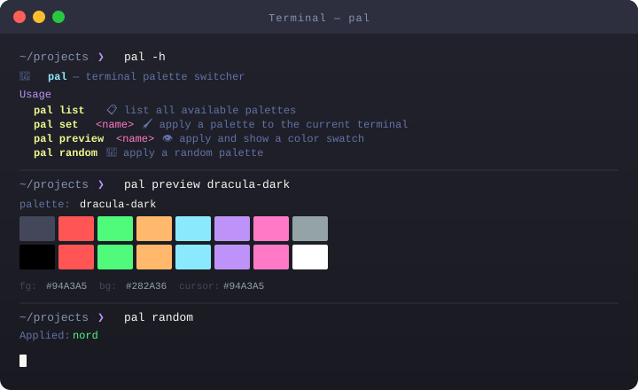

Commands, examples, and shell integration

| Command | Description |
|---|---|
| pal list | List all 420 available palette names, one per line |
pal set <name> | Apply the palette to the current terminal immediately |
pal preview <name> | Show a 16-color swatch without changing your palette |
| pal random | Pick and apply a random palette from all 420 |
pal export <name> | Print a printf shell one-liner for .bashrc |
pal <name> | Shorthand — same as pal set <name> |
| pal -h | Show help |
$ pal dracula-dark $ pal nord $ pal set monokai-dark
$ pal preview rose-pine-dark palette: rose-pine-dark fg:#E0DEF4 bg:#191724 cursor:#E0DEF4
$ pal random Applied: gotham-dark $ pal random Applied: base16-monokai
$ pal list | grep gruvbox base16-gruvbox-hard base16-gruvbox-medium base16-gruvbox-pale base16-gruvbox-soft gruvbox gruvbox-dark gruvbox-light $ pal list | grep -c "" 420
pal binary installed.
The output is a self-contained printf one-liner that works in any POSIX shell.
# print the shell code $ pal export dracula-dark printf '\033]4;0;#44475A\033\\\033]4;1;#FF5555\033\\ ...' # append directly to your shell profile $ echo "$(pal export dracula-dark)" >> ~/.bashrc # now every new terminal opens with dracula-dark # no pal binary required at runtime
# add to ~/.bashrc or ~/.zshrc alias theme='pal set' alias rtheme='pal random' # then $ theme nord $ rtheme